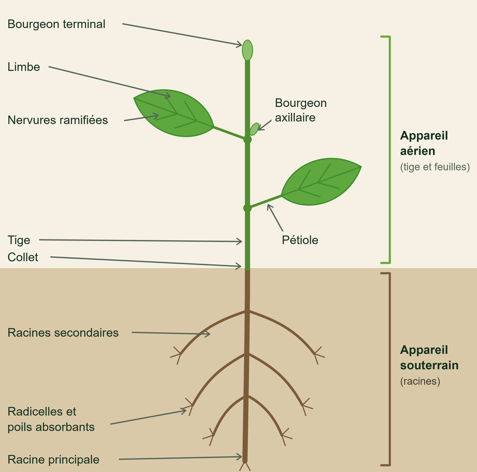
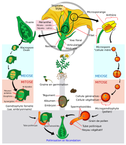
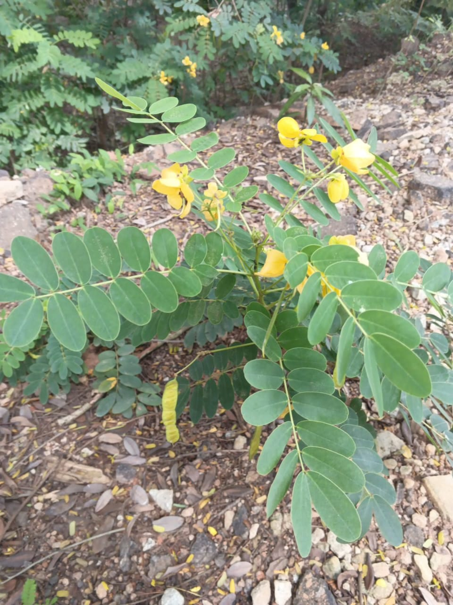
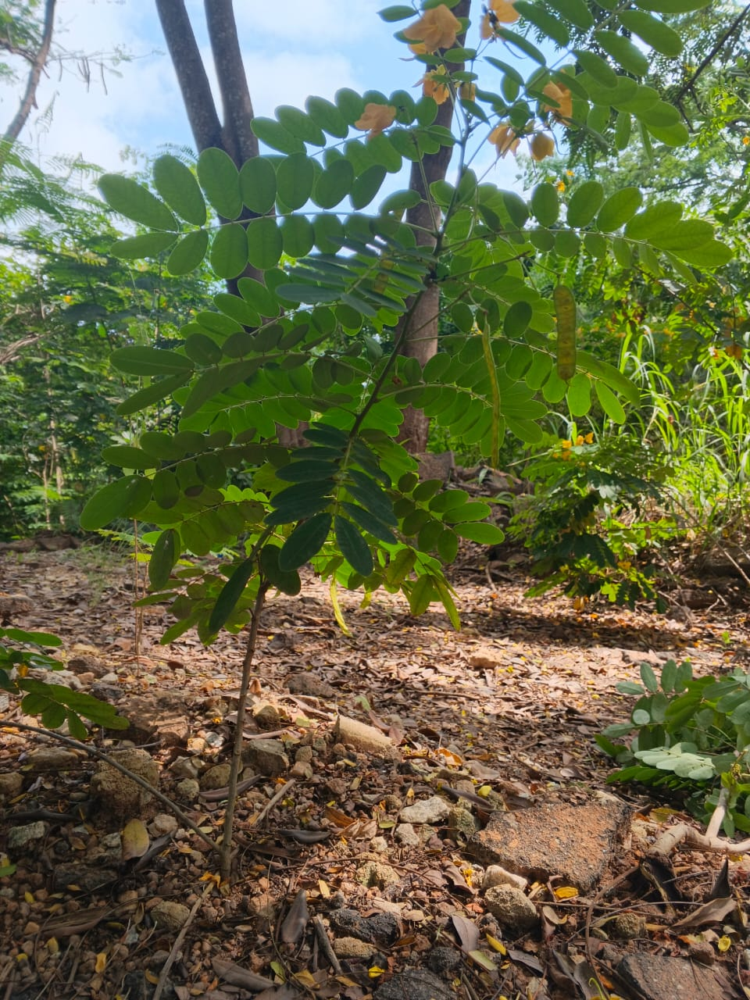
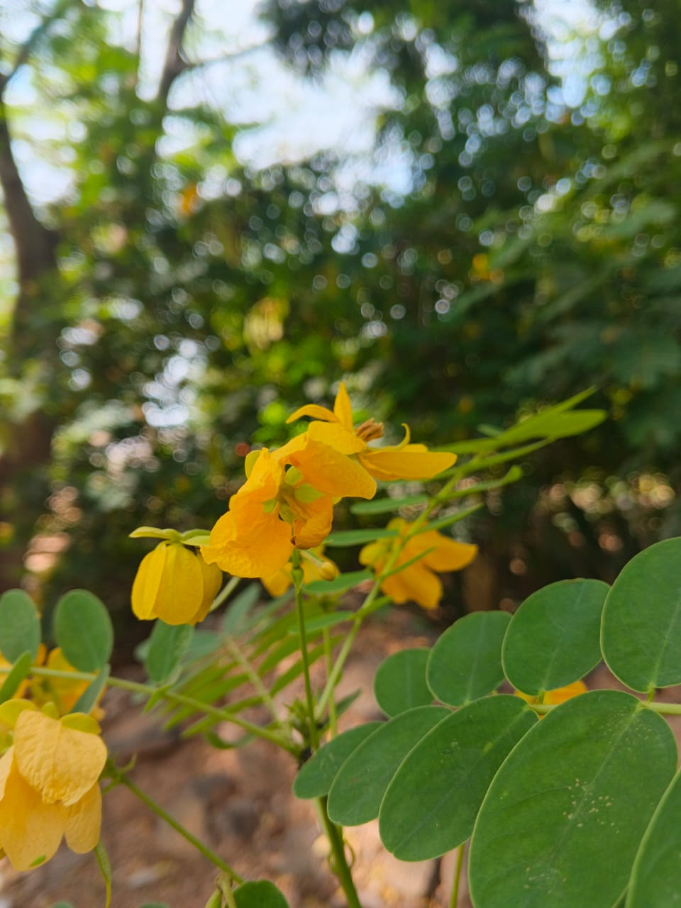

Dicotylédones
Des plantes à fleurs présentant une grande diversité de formes et d'espèces
Appareil végétatif
- Feuilles : généralement larges, avec une nervation réticulée (pennée ou palmée).
- Tige : généralement ramifiée, herbacée ou ligneuse, assurant le soutien de la plante.
- Racines : souvent organisées en système pivotant, avec une racine principale et des racines secondaires.
- Fleurs : organes reproducteurs souvent organisés en pièces florales par quatre ou cinq, ou leurs multiples.

Reproduction

Observation sur terrain



Espèce :Dicotylédone, Senna podocarpa (Guill. & Perr.) Lock
Milieu : Sec, Ombre,Sol
GPS : 6.8923069 ; -5.2253325
Date : 21/11/2026